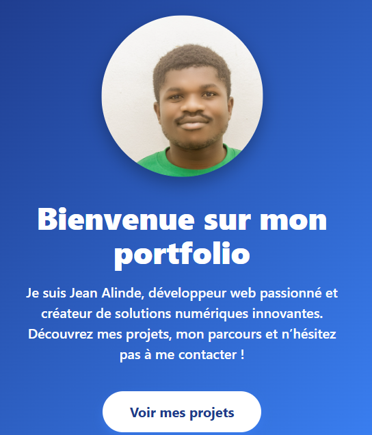
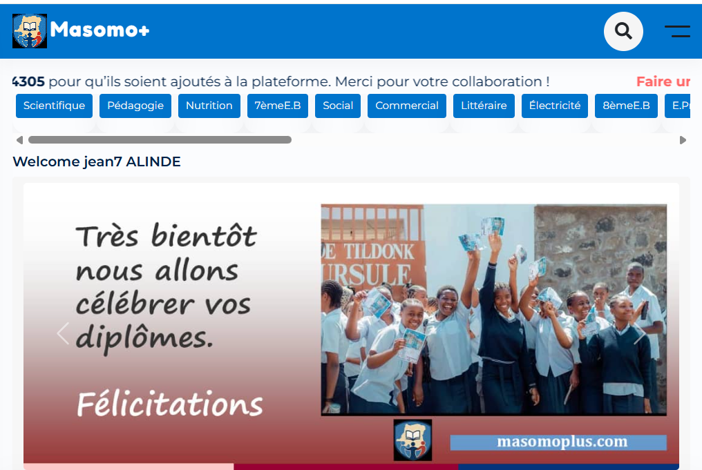
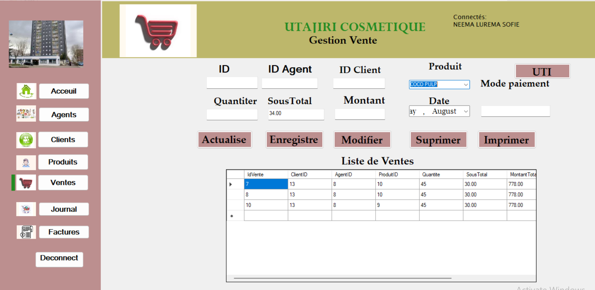

Mes Projets

Portfolio personnel
Un site web responsive conçu pour présenter mes compétences, expériences et projets de manière professionnelle.

masomoplus
j'ai aussi participer À la conception de MasomoPlus qui est une plateforme d’apprentissage numérique qui propose des contenus éducatifs variés pour les élèves et étudiants congolais.
